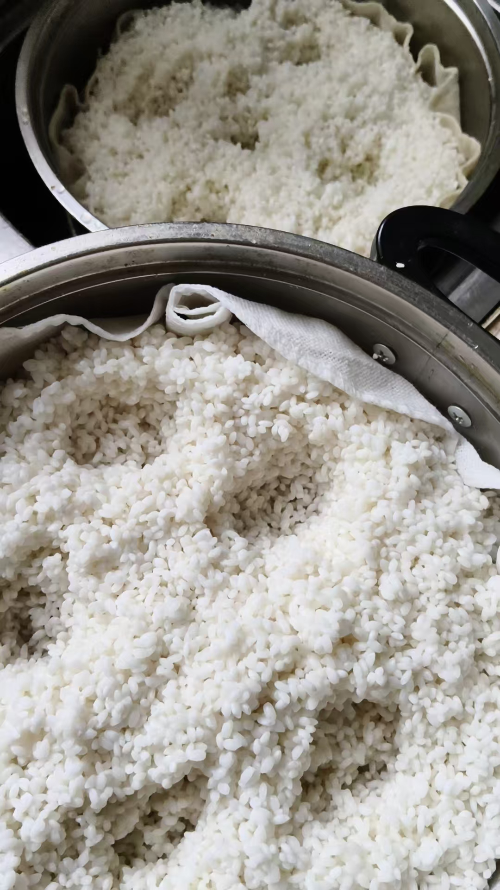
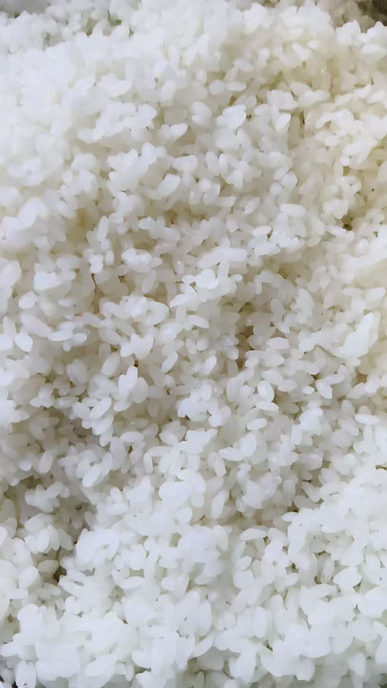
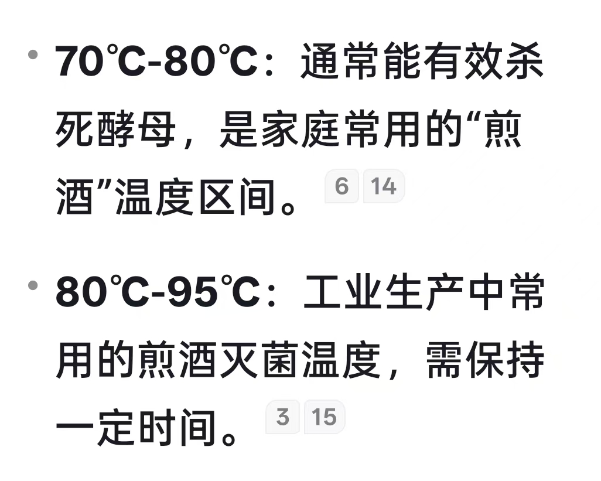
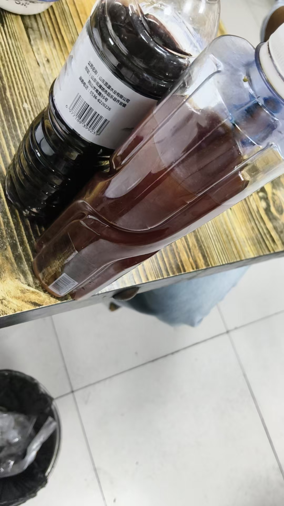

20260924米酒
风水布局功能继续提升，堕胎婴灵，不管成形没有成形，男女早定
这样，根据男女送衣服，及各种用具
万无一失
黑龙江有个老头，八十多岁，就不用说，知道堕胎几个，几男几女
这个很服人
因为男女，不成形可能分不出来
但是几个，一般都记得很清楚

只有三个桶
连做三天米酒，存起来
刚才搜了个太岁
说以前抓过
罚款二十万
说是三无产品
太搞笑了
太岁还有厂家生产吗
[呲牙][呲牙][呲牙]
@紫鸢真人 师父，做米酒怎么才能让酒水多，我看下网上是需要二发吗？我的醪糟，虽然甜，感觉酒水少了点，加水再煮感觉没有外面买的甜。

网上教的，细节不说
米洗净泡六小时
蒸十五分钟
凉水冲凉
把米放进发酵桶
拌上曲
一斤干米加半斤矿泉水
米吸水，不加水，不等发酵就干了
一斤干米加半斤水，再搅拌均匀，就半干不湿了
用压板压实，
酒瓶子把中间压一个看酒的窝
大约一天半，窝里酒满
甘甜
再一斤米加一斤矿泉水
米糖化，浮上来
略微有酒味，蒸八十度灭菌
装进瓶子，约存放越好喝
蒸100度，
八十度灭菌[呲牙][呲牙][呲牙]，二十分钟
一百度，蒸开了，好像跑了味道
蒸100度把酒曲味去
可以多放
[憨笑][憨笑][憨笑][憨笑]

@谢芳玲
还真不能一百度
我是真酿酒师，正儿八经培训过
[憨笑][憨笑][憨笑]
品鉴师资格
[呲牙][呲牙]
还是品酒师
正儿八经的资格证书
那不是在群里发过
米要掌握火候，蒸太烂了，反倒不好
我直接煮的，没有蒸，估计太烂了
煮不行
必须严格要求
半熟米还能化成泥
煮的化成浆了，取不出酒来

桑椹酒
这颜色淡的，疏通能力特别强
[呲牙][呲牙]前几天听课的那个，就给了一本药酒书，一盒熊胆粉，再没下文
属于送完了就跑的那种
听课也不用听，就放在一边，播四十分钟
今晚是赚了两万国奖的研究生请吃饭
[呲牙][呲牙]
全校惊讶
导师都摸不着头脑了
再也想不到这学生能得国奖
180分
二百多三百多的就不敢报
充分验证了神通的准确性
不过我没有改
只是看亮不亮